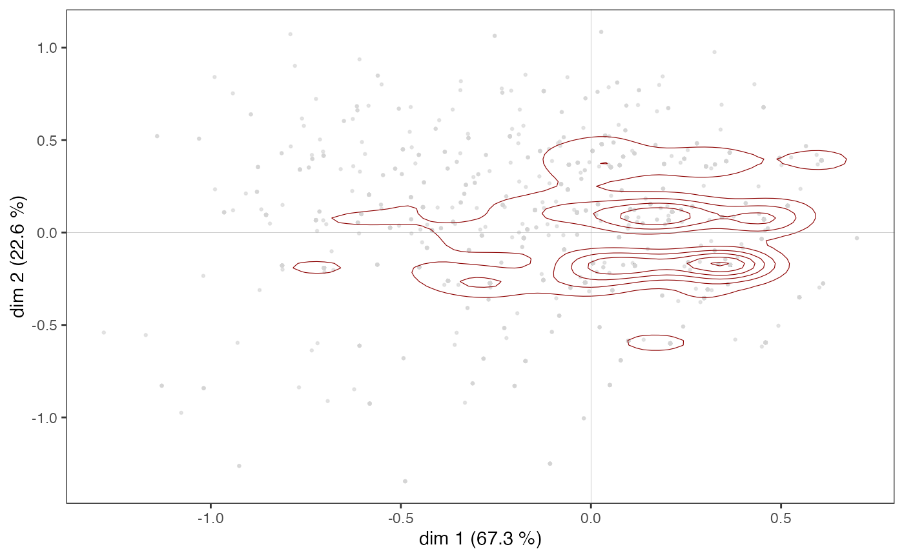
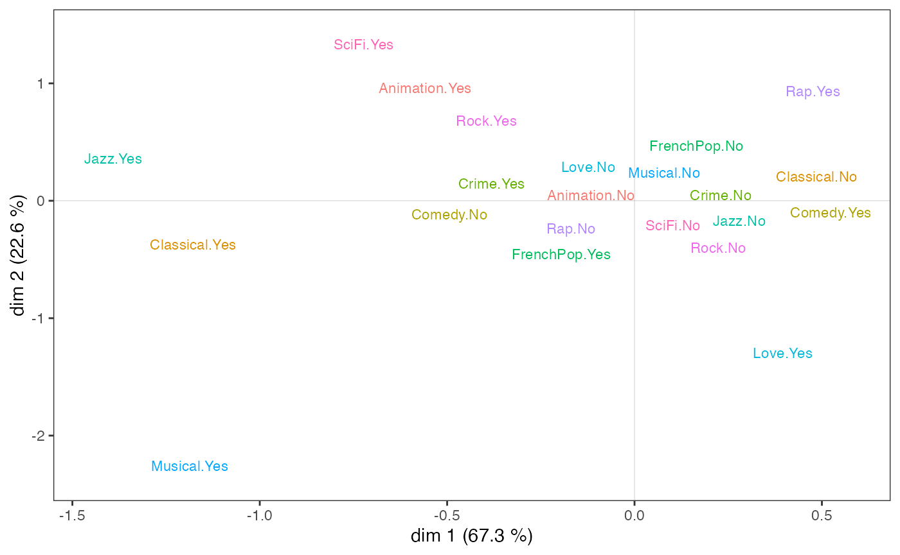
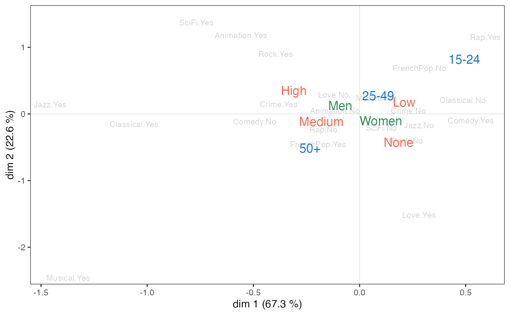
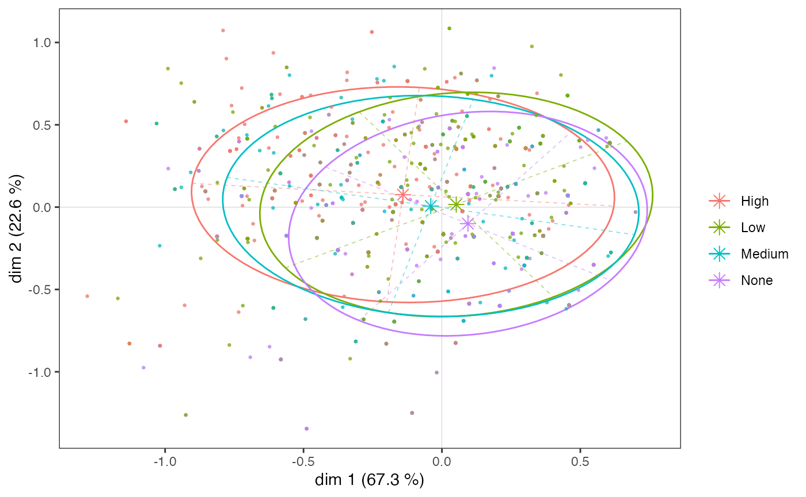
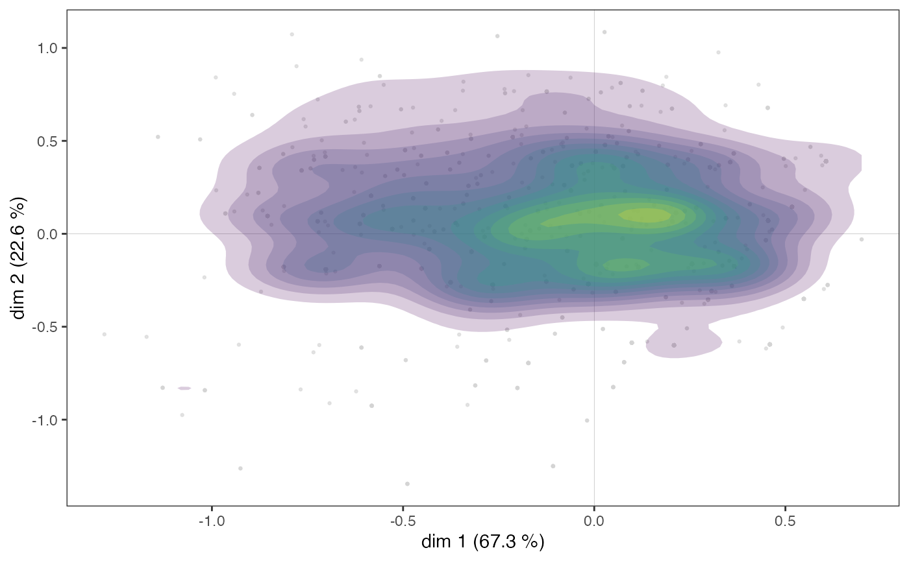
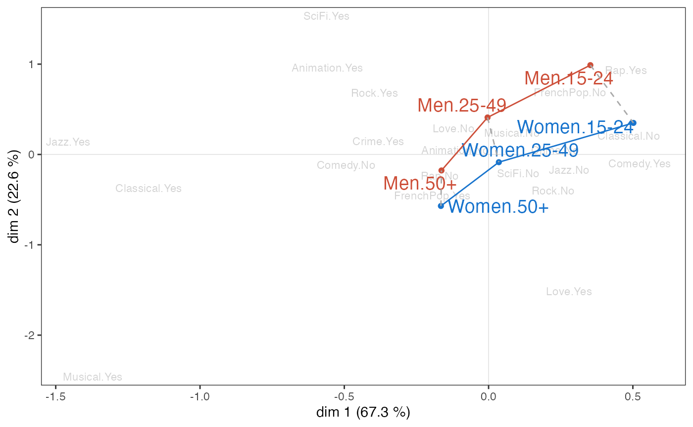
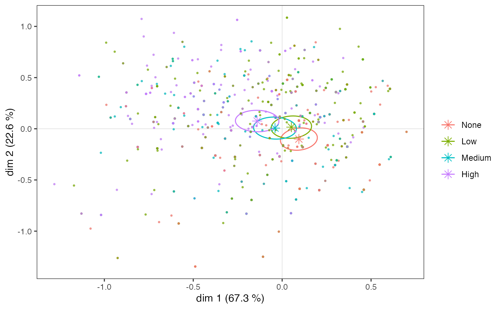
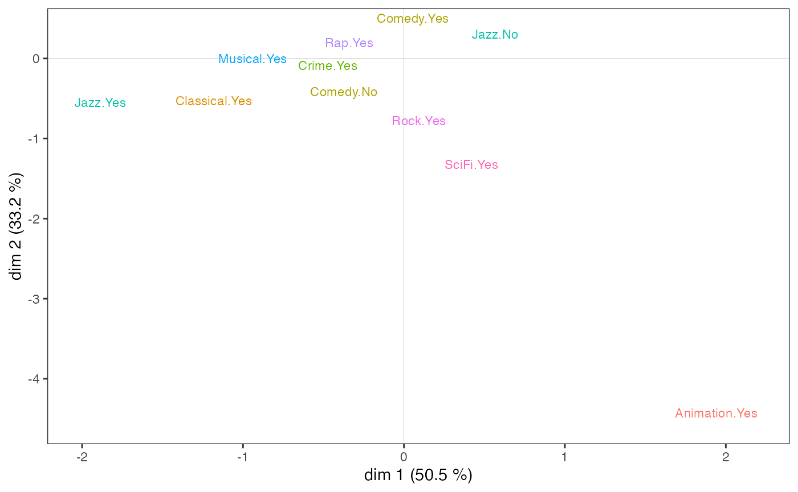
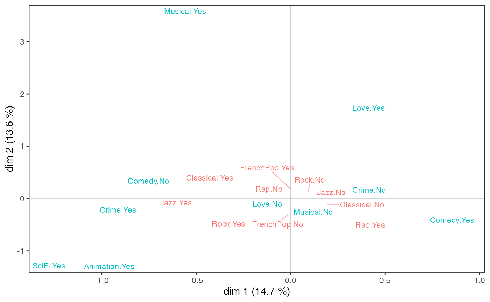

Geometric Data Analysis with GDAtools
Nicolas Robette
2021-05-08
Source:vignettes/Tutorial_GDA.Rmd
Tutorial_GDA.RmdThis tutorial presents the use of the GDAtools package for geometric data analysis. For more detailed information on the statistical procedures themselves, it is recommended to refer to the books by Henry Rouanet and Brigitte Le Roux:
Le Roux B. and Rouanet H., 2004, Geometric Data Analysis: From Correspondence Analysis to Stuctured Data Analysis, Kluwer Academic Publishers, Dordrecht.
Le Roux B. and Rouanet H., 2010, Multiple Correspondence Analysis, SAGE, Series: Quantitative Applications in the Social Sciences, Volume 163, CA:Thousand Oaks.
Introduction
For this example of Multiple Correspondence Analysis, we will use one of the data sets provided with the package. This is information on the tastes and cultural practices of 2000 individuals: listening to musical genres (French variety, rap, rock, jazz and classical) and taste for film genres (comedy, crime film, animation, science fiction, love film, musical). These 11 variables will be used as “active” variables in the MCA and are completed by 3 “supplementary” variables: gender, age and level of education.
'data.frame': 2000 obs. of 14 variables:
$ FrenchPop: Factor w/ 3 levels "No","Yes","NA": 2 1 2 1 2 1 1 1 1 2 ...
$ Rap : Factor w/ 3 levels "No","Yes","NA": 1 1 1 1 1 1 1 1 1 1 ...
$ Rock : Factor w/ 3 levels "No","Yes","NA": 1 1 2 1 1 2 1 1 2 1 ...
$ Jazz : Factor w/ 3 levels "No","Yes","NA": 1 2 1 1 1 1 1 1 1 1 ...
$ Classical: Factor w/ 3 levels "No","Yes","NA": 1 2 1 2 1 1 1 1 1 1 ...
$ Comedy : Factor w/ 3 levels "No","Yes","NA": 1 2 1 1 1 1 2 2 2 2 ...
$ Crime : Factor w/ 3 levels "No","Yes","NA": 1 1 1 1 2 1 1 1 1 1 ...
$ Animation: Factor w/ 3 levels "No","Yes","NA": 1 1 1 1 1 1 1 1 1 1 ...
$ SciFi : Factor w/ 3 levels "No","Yes","NA": 2 1 1 1 1 2 1 1 1 1 ...
$ Love : Factor w/ 3 levels "No","Yes","NA": 1 1 2 1 1 1 1 1 1 1 ...
$ Musical : Factor w/ 3 levels "No","Yes","NA": 1 1 1 1 1 1 1 1 1 1 ...
$ Gender : Factor w/ 2 levels "Men","Women": 1 1 2 1 2 2 2 2 1 1 ...
$ Age : Factor w/ 3 levels "15-24","25-49",..: 2 3 2 3 2 2 2 2 1 3 ...
$ Educ : Factor w/ 4 levels "None","Low","Medium",..: 3 4 3 4 2 1 3 2 2 2 ...The active variables all have a “not available” (“NA”) category, which concerns some individuals. The so-called “specific” MCA makes it possible to neutralise these categories in the construction of the factorial space, while retaining all the individuals.
FrenchPop Rap Rock Jazz Classical Comedy Crime Animation
10 9 10 15 5 3 15 4
SciFi Love Musical
12 7 11 We start by identifying the rank of the categories we wish to neutralise.
getindexcat(Taste[,1:11]) [1] "FrenchPop.No" "FrenchPop.Yes" "FrenchPop.NA" "Rap.No"
[5] "Rap.Yes" "Rap.NA" "Rock.No" "Rock.Yes"
[9] "Rock.NA" "Jazz.No" "Jazz.Yes" "Jazz.NA"
[13] "Classical.No" "Classical.Yes" "Classical.NA" "Comedy.No"
[17] "Comedy.Yes" "Comedy.NA" "Crime.No" "Crime.Yes"
[21] "Crime.NA" "Animation.No" "Animation.Yes" "Animation.NA"
[25] "SciFi.No" "SciFi.Yes" "SciFi.NA" "Love.No"
[29] "Love.Yes" "Love.NA" "Musical.No" "Musical.Yes"
[33] "Musical.NA" The vector of these ranks is then given as an argument to the function speMCA.
The clouds
The Benzécri corrected inertia rates give an idea of how much information is represented by each axis.
modif.rate(mca)$modif mrate cum.mrate
1 67.30532896 67.30533
2 22.64536000 89.95069
3 7.17043134 97.12112
4 2.26387669 99.38500
5 0.59232858 99.97733
6 0.02267443 100.00000It can be seen here that the first two axes capture most of the information (almost 90%). In the following we will therefore concentrate on the plane formed by axes 1 and 2.
The cloud of individuals
The cloud of individuals does not have a particular shape (triangle, horseshoe…), the points seem to be distributed in the whole plane.
ggcloud_indiv(mca)
However, in some cases, points may overlap and the structure of the cloud of individuals is only imperfectly rendered by a scatter plot. It is then possible to complete the first graph with a representation of the density of points in the plane. The function ggcloud_indiv allows this to be done using contours or hexagonal areas.
ggcloud_indiv(mca, col="lightgray", density="contour")
ggcloud_indiv(mca, density="hex", hex.bin=10)
Whichever density representation is used, it can be seen that the points appear to be more concentrated in an area immediately to the right of the vertical axis.
The cloud of variables
On the variable cloud,
Listening to jazz and classical music and liking musicals seem to be opposed to listening to rap and liking comedies on axis 1;
Taste for animation and science fiction to taste for love films and musicals on axis 2.
ggcloud_variables(mca, shapes=FALSE, legend="none")
However, to be robust, the interpretation of the factorial plane cannot stop at a visual examination of the cloud of variables. This must be complemented by the careful analysis of statistical indicators, in particular the contributions of the categories to the construction of the axes.
Aids to interpretation
Most of the aids to interpretation and other useful information are present in the object created by speMCA. The package offers several functions to easily extract this information.
-
contribpresents the contributions of the variables and the categories of these variables to the construction of each of the axes and to that of the cloud. -
dimcontribextracts the contributions of individuals and variable categories to the construction of a particular axis. -
dimdescridentifies the variables and variable categories most statistically associated with the different axes. The measures of association used are the etas² for the variables and the correlation coefficients for the categories.
The tabcontrib function allows, for a given axis, to summarise the main contributions (only contributions above the average are presented).
tabcontrib(mca, dim=1)| var | moda | ctr1 | ctr2 | weight | ctrtot | cumctrtot |
|---|---|---|---|---|---|---|
| Classical | Yes | -23.08 | 552 | 31.88 | 31.88 | |
| No | 8.8 | 1443 | ||||
| Jazz | Yes | -25.49 | 364 | 31.15 | 63.03 | |
| No | 5.66 | 1621 | ||||
| Comedy | No | -7.22 | 1141 | 16.88 | 79.91 | |
| Yes | 9.66 | 856 |
The classical music and jazz listening variables alone contribute over 60% to the construction of axis 1. Listening to classical music and jazz is therefore opposed to not listening to them, and secondarily to a taste for comedy.
tabcontrib(mca, dim=2)| var | moda | ctr1 | ctr2 | weight | ctrtot | cumctrtot |
|---|---|---|---|---|---|---|
| Rock | No | -4.78 | 1455 | 17.77 | 17.77 | |
| Yes | 12.99 | 535 | ||||
| Love | Yes | -17.24 | 225 | 17.24 | 35.01 | |
| FrenchPop | Yes | -5.69 | 1249 | 15.38 | 50.39 | |
| No | 9.69 | 741 | ||||
| Musical | Yes | -14.33 | 66 | 14.33 | 64.72 | |
| SciFi | Yes | 11.49 | 143 | 11.49 | 76.21 | |
| Rap | Yes | 11.05 | 261 | 11.05 | 87.26 |
On axis 2, listening to rock and rap music and a taste for science fiction films are opposed to a taste for love films and musicals and listening to French pop music.
Structuring factors
The supplementary variables
We can go further by studying the relationship between the factorial plane and the supplementary variables, in this case gender, age and education. A first step is to project the supplementary variables onto the cloud of variables.
p <- ggcloud_variables(mca, shapes=FALSE, col="lightgray")
p <- ggadd_supvar(p, mca, Taste$Age, col="dodgerblue3", shape=NULL)
p <- ggadd_supvar(p, mca, Taste$Educ, col="tomato", shape=NULL)
ggadd_supvar(p, mca, Taste$Gender, col="seagreen", shape=NULL)
Level of education appears to be primarily associated with axis 1, with the most educated on the side of jazz and classical listening. Gender seems to be linked only to axis 2, with women at the bottom of the plane and men at the top. Age is associated with both axes, with individuals moving from the north-east quadrant to the south-west quadrant as their age increases.
These initial observations can be confirmed statistically by measuring the degree of association between the supplementary variables and the axes using the eta² indicator.
dim.1 dim.2
Gender 0.0 6.0
Age 3.8 14.2
Educ 5.9 3.3Education is the supplementary variable most associated with axis 1: it ‘explains 5.9% of the variance in individual coordinates’ on this axis. Age is also associated with the first axis, but to a lesser extent, and gender not at all.
On axis 2, age is the most structuring variable, ahead of gender and education level. We can also see that age is clearly more closely linked to axis 2 than to axis 1.
At the level of the categories, the association of a supplementary variable category with an axis can be characterised from the correlation coefficients.
| categories | median.y.in.xcat | median.y.global | mad.y.in.xcat | mad.y.global | cor |
|---|---|---|---|---|---|
| Age.15-24 | 0.204 | 0.062 | 0.215 | 0.248 | 0.176 |
| Educ.None | 0.141 | 0.062 | 0.191 | 0.248 | 0.145 |
| Educ.Low | 0.104 | 0.062 | 0.224 | 0.248 | 0.100 |
| Age.25-49 | 0.069 | 0.062 | 0.224 | 0.248 | 0.015 |
| Gender.Women | 0.067 | 0.062 | 0.244 | 0.248 | 0.012 |
| Gender.Men | 0.057 | 0.062 | 0.252 | 0.248 | -0.012 |
| Educ.Medium | 0.014 | 0.062 | 0.272 | 0.248 | -0.051 |
| Age.50+ | 0.001 | 0.062 | 0.270 | 0.248 | -0.142 |
| Educ.High | -0.098 | 0.062 | 0.273 | 0.248 | -0.213 |
On axis 1, those with no or few qualifications and those aged 15-24 are opposed to those with more qualifications and those aged 50 and over. The other categories appear to have little connection with the axis (their correlation coefficients are close to 0).
| categories | median.y.in.xcat | median.y.global | mad.y.in.xcat | mad.y.global | cor |
|---|---|---|---|---|---|
| Age.15-24 | 0 | 0 | 0 | 0 | 0.288 |
| Gender.Men | 0 | 0 | 0 | 0 | 0.245 |
| Age.25-49 | 0 | 0 | 0 | 0 | 0.123 |
| Educ.High | 0 | 0 | 0 | 0 | 0.123 |
| Educ.Low | 0 | 0 | 0 | 0 | 0.034 |
| Educ.Medium | 0 | 0 | 0 | 0 | 0.009 |
| Educ.None | 0 | 0 | 0 | 0 | -0.167 |
| Gender.Women | 0 | 0 | 0 | 0 | -0.245 |
| Age.50+ | 0 | 0 | 0 | 0 | -0.330 |
On axis 2, men, the under 50s and the more educated are opposed to women, the over 50s and the uneducated.
Analysis of one supplementary variable
Let us continue the analysis by focusing on one supplementary variable, the level of education. The varsup function provides the coordinates of the categories on the axes, their cosinus² (which gives the quality of representation of a category on an axis), their dispersions on the axes, the eta² and the typicality tests (to which we will return in the next section).
varsup(mca, Taste$Educ)$weight
None Low Medium High
490 678 357 475
$coord
dim.1 dim.2 dim.3 dim.4 dim.5
None 0.254716 -0.293253 -0.191563 0.094510 -0.050520
Low 0.140147 0.046951 0.002259 -0.063613 -0.044181
Medium -0.109057 0.019669 0.054436 0.070183 -0.027962
High -0.380835 0.220714 0.153475 -0.059443 0.136194
$cos2
dim.1 dim.2 dim.3 dim.4 dim.5
None 0.021054 0.027906 0.011908 0.002899 0.000828
Low 0.010073 0.001131 0.000003 0.002075 0.001001
Medium 0.002584 0.000084 0.000644 0.001070 0.000170
High 0.045175 0.015173 0.007337 0.001101 0.005777
$var
dim.1 dim.2 dim.3 dim.4 dim.5
None 0.104915 0.116125 0.115232 0.103800 0.086031
Low 0.125921 0.116092 0.109029 0.087945 0.087735
Medium 0.141298 0.112505 0.097031 0.102449 0.094541
High 0.145983 0.107170 0.091066 0.106049 0.113352
within 0.128284 0.113341 0.104141 0.098718 0.094616
between 0.008061 0.003923 0.001598 0.000524 0.000555
total 0.136345 0.117264 0.105739 0.099242 0.095172
eta2 0.059123 0.033455 0.015115 0.005279 0.005832
$typic
dim.1 dim.2 dim.3 dim.4 dim.5
None 6.487410 -7.468929 -4.878958 2.407110 -1.286704
Low 4.487336 1.503312 0.072336 -2.036827 -1.414633
Medium -2.272883 0.409932 1.134503 1.462690 -0.582753
High -9.502876 5.507427 3.829615 -1.483270 3.398406
$pval
dim.1 dim.2 dim.3 dim.4 dim.5
None 0.000000 0.000000 0.000001 0.016079 0.198197
Low 0.000007 0.132758 0.942334 0.041667 0.157176
Medium 0.023033 0.681856 0.256584 0.143552 0.560059
High 0.000000 0.000000 0.000128 0.138003 0.000678
$cor
dim.1 dim.2 dim.3 dim.4 dim.5
None 0.145 -0.167 -0.109 0.054 -0.029
Low 0.100 0.034 0.002 -0.046 -0.032
Medium -0.051 0.009 0.025 0.033 -0.013
High -0.213 0.123 0.086 -0.033 0.076Graphically, we can represent the “subcloud” of each of the categories with the help of a concentration ellipse, which is centred on the mean point and encompasses 86% of the individuals having this category.
p <- ggcloud_indiv(mca, col='lightgrey')
ggadd_kellipses(p, mca, Taste$Educ, label=FALSE)
Even though, as we have seen, the education level categories are ordered along axis 1, the subclouds overlap to a very large extent, as the association between the variable and the axis is moderate.
Let us now look more specifically at the subcloud of the most highly educated individuals.
ggadd_kellipses(p, mca, Taste$Educ, sel=4, legend="none")
A concentration ellipse is useful because it represents both the mean point of the category and the dispersion of the subcloud along the axes. Here we see that although the mean point of the most highly educated individuals is located in the northwest quadrant, a significant proportion of the points in the subcloud are to the right and/or bottom of the plane.
The concentration ellipses, on the other hand, give only an imperfect representation of the distribution of the points of the subcloud, because of the possible overlapping of the points (in a similar way to what we saw for the cloud of the individuals) and its centring on the mean point. It can therefore be interesting to complete a concentration ellipse with a representation of the density of the points of the subcloud, in the form of contours or areas.
ggadd_density(p, mca, var=Taste$Educ, cat="High", density="contour")
ggadd_density(p, mca, var=Taste$Educ, cat="High", density="area", ellipse=TRUE)
Here we see that there appears to be a concentration of highly educated individuals immediately to the right of the vertical axis, in an area that also corresponds to a concentration of points in the cloud of individuals (see above).
A further step in the analysis consists in neutralising the influence of the distribution of points in the cloud of individuals on that of the subcloud, by asking in which parts of the plane the most highly educated are over/under represented. This is possible using a heat map, by measuring in each tile the correlation coefficient between having a high level of education and being located in the tile rather than in the rest of the plane.
ggadd_corr(p, mca, var=Taste$Educ, cat="High", xbins=20, ybins=20)
The most highly educated individuals are over-represented in the northwest quadrant as a whole, but also among the westernmost in the southwest quadrant.
Note that we can also represent the subclouds corresponding to the categories of a supplementary variable using convex hulls. A convex hull is the smallest convex polygon among those containing a set of points. In the context of GDA, convex hulls are an interesting graphical representation especially if the represented subclouds are relatively little overlapped. This is the case, for example, if we perform a partition of individuals in a plane using automatic clustering. Here, we apply hierarchical ascending clustering to the coordinates of the individuals in the plane 1-2 and we identify 3 clusters.
d <- dist(mca$ind$coord[,c(1,2)])
hca <- hclust(d, "ward.D2")
cluster <- factor(cutree(hca, 3))
ggadd_chulls(p, mca, cluster)
Interaction between two supplementary variables
Interactions between several supplementary variables can also be studied, for example here between gender and age.
p <- ggcloud_variables(mca, col='lightgrey', shapes=FALSE)
ggadd_interaction(p, mca, Taste$Gender, Taste$Age, col=c("tomato3","dodgerblue3"), legend="none")
Gender and age seem to interact little in the 1-2 plane. However, it can be seen that on axis 1, the differences between the youngest and the oldest are greater for women than for men, and that on axis 2, the youngest differ more by gender than the oldest.
Inductive data analysis
If one wishes to assess the generalizability of the results, one can complement the above descriptive analyses with statistical inference procedures that borrow from inductive data analysis and combinatorial approaches (for this part even more than for the others, we refer to Le Roux and Rouanet, 2004 & 2010).
The typicality problem consists in asking whether a group of individuals can be assimilated to the reference population or whether it is atypical. A typicality test calculates a combinatorial p-value, which defines the “degree of typicality” of the mean point of the group of individuals. A low p-value is considered statistically significant in the combinatorial sense and reflects a difference that is probably not due to chance.
dimtypicality(mca, Taste[,c("Gender","Age","Educ")], dim=c(1,2), max.pval=0.05)$dim.1
weight test.stat p.value
Age.15-24 297 7.890052 0.00000
Educ.None 490 6.487410 0.00000
Educ.Low 678 4.487336 0.00001
Educ.Medium 357 -2.272883 0.02303
Age.50+ 854 -6.340738 0.00000
Educ.High 475 -9.502876 0.00000
$dim.2
weight test.stat p.value
Age.15-24 297 12.875430 0
Gender.Men 958 10.972527 0
Age.25-49 849 5.520379 0
Educ.High 475 5.507427 0
Educ.None 490 -7.468929 0
Gender.Women 1042 -10.972527 0
Age.50+ 854 -14.772247 0At a 5% level, the mean points of women, men and middle-aged people are not significantly different from that of the whole population on axis 1 (i.e. 0). On axis 2, it is the mean points of the low and medium levels of education that do not differ significantly from the origin.
The results of the typicality tests for a particular supplementary variable can be studied using the varsup function.
dim.1 dim.2
None 0.000000 0.000000
Low 0.000007 0.132758
Medium 0.023033 0.681856
High 0.000000 0.000000We can see that, on axis 1, all the education level categories are significantly different from 0 at a level of 5%, they are atypical of the whole cloud of individuals, but that this is not the case for the “low” and “medium” categories on axis 2.
The confidence ellipses follow the same logic as the typicality tests. With a conventional significance threshold of 5%, the confidence ellipse is a 95% confidence zone representing all the possible mean points of a category that are not significantly different from the observed mean point.
p <- ggcloud_indiv(mca, col='lightgrey')
ggadd_ellipses(p, mca, Taste$Educ, level=0.05, label=FALSE)
A homogeneity test is a combinatorial procedure that aims to compare several groups of individuals. The question asked is whether, on a given axis, the positions of two groups are significantly different.
ht <- homog.test(mca, Taste$Educ)
ht$dim.1$p.values None Low Medium High
None 1.000000e+00 1.680934e-07 0 0
Low 1.680934e-07 1.000000e+00 0 0
Medium 0.000000e+00 0.000000e+00 1 0
High 0.000000e+00 0.000000e+00 0 1On axis 1, the mean points of the education level categories are all significantly different from each other (the p-values are all very close to 0).
ht$dim.2$p.values None Low Medium High
None 1 0.0000000 0.0000000 0
Low 0 1.0000000 0.2232064 0
Medium 0 0.2232064 1.0000000 0
High 0 0.0000000 0.0000000 1This is not the case on axis 2, where the “low” and “medium” categories do not differ significantly (p-value=0.22).
Class Specific Analysis
Class Specific Analysis (CSA) is an extension of MCA which allows the study of a subcloud of individuals by taking into account the distribution of variables in the subcloud and in the whole cloud. It is thus a question of taking into account the fact that the structure of the subcloud does not exist in abstracto but in relation to the cloud in which it is included.
CSA is illustrated here using the subcloud of the most highly educated individuals.
ggcloud_variables(csa, shapes=FALSE, legend="none")
tabcontrib(csa, dim=1)| var | moda | ctr1 | ctr2 | weight | ctrtot | cumctrtot |
|---|---|---|---|---|---|---|
| Jazz | Yes | -41.85 | 145 | 51.08 | 51.08 | |
| No | 9.23 | 326 | ||||
| Classical | Yes | -17.79 | 183 | 24.55 | 75.63 | |
| No | 6.76 | 290 | ||||
| Animation | Yes | 12.43 | 34 | 12.43 | 88.06 |
We can see that, as in the MCA, listening to jazz and classical music structure axis 1, but this time much more strongly since these two variables alone contribute 75% to the construction of the axis.
tabcontrib(csa, dim=2)| var | moda | ctr1 | ctr2 | weight | ctrtot | cumctrtot |
|---|---|---|---|---|---|---|
| Animation | Yes | -59.05 | 34 | 59.05 | 59.05 | |
| SciFi | Yes | -9.51 | 38 | 9.51 | 68.56 | |
| Rock | Yes | -6.71 | 203 | 6.71 | 75.27 | |
| Jazz | Yes | -5.43 | 145 | 5.43 | 80.7 |
It is above all the taste for animation movies that contributes to the construction of axis 2, which may be explained in part by the small number of this category.
Finally, the subcloud of the variables for the most highly educated people has points in common with that of the population as a whole, but also some very marked specificities.
We will not go any further here, but it should be noted that all the techniques described above can be applied to the results of a CSA.
Standardized MCA
Standardized MCA is an attempt to integrate geometric data analysis and regression. Its principle consists in constraining the axes of the MCA to be independent (i.e. orthogonal) to a supplementary variable, i.e. to construct a MCA “all other things (about this supplementary variable) being equal” (Bry et al, 2016). Comparing the space of the original MCA with that of the standardized MCA is a way to study structural effects.
Here, when we “control” the MCA by education level, which is associated with axis 1, we find, for example, that tastes for romance movies and musicals, which are more popular with women, shift to the left of the plane.
stmca <- stMCA(mca, control=list(Taste$Educ))
ggcloud_variables(stmca, shapes=FALSE, legend="none")
Multiple Factor Analysis
GDAtools also allows to perform Multiple Factor Analysis (MFA) using specific MCAs or Class Specific Analysis.
Here, one group of variables describes the listening to music genres and the other the taste for movie genres, and the MFA uses specific MCAs. We observe that it is the film variables that structure the plane 1-2.
mca1 <- speMCA(Taste[,1:5],excl=c(3,6,9,12,15))
mca2 <- speMCA(Taste[,6:11],excl=c(3,6,9,12,15,18))
mfa <- multiMCA(list(mca1,mca2))
ggcloud_variables(mfa, shapes=FALSE, legend="none")